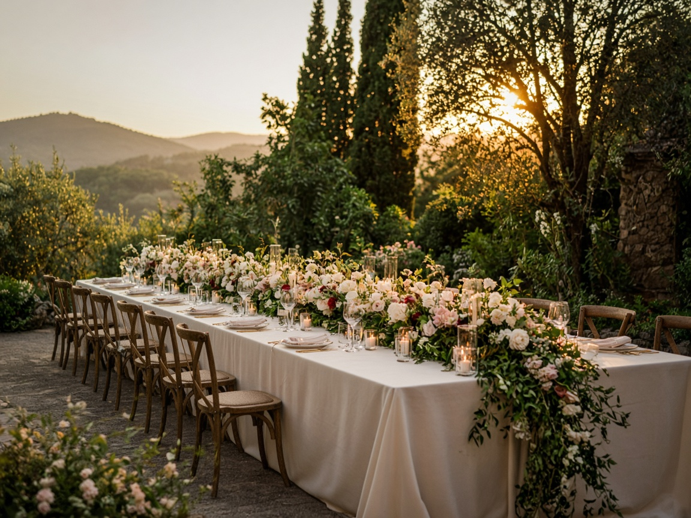
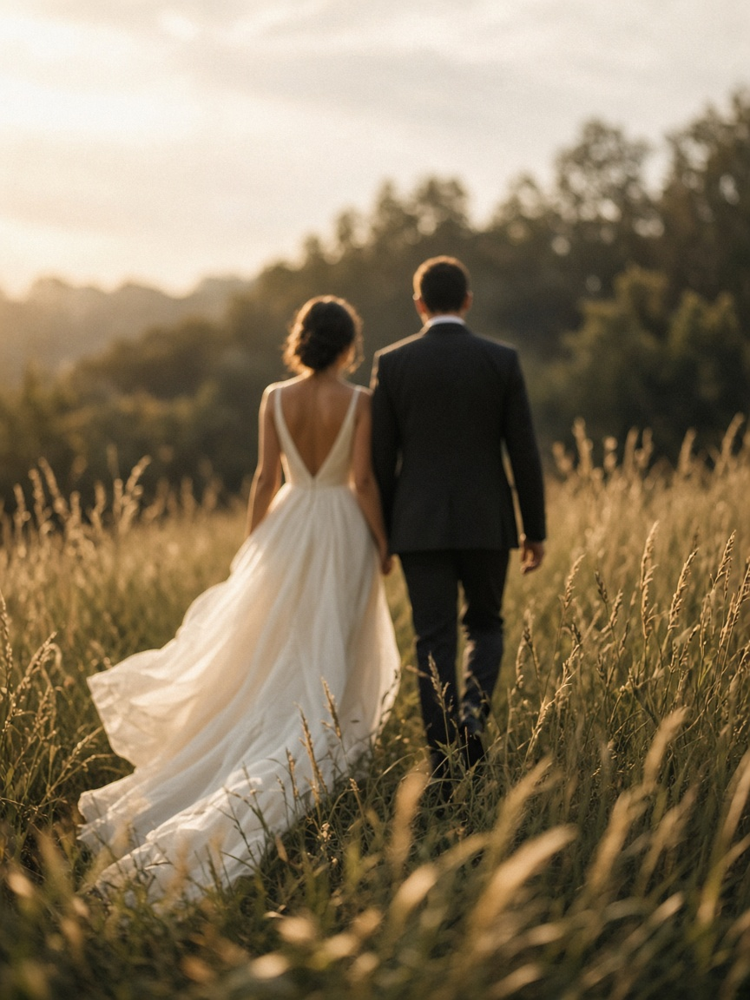

Celebração no campo
Cerimonial & direção criativa · Cuiabá Mato Grosso
Ideias bonitas viram memórias.

Manifesto
A Alvorada cria celebrações com intenção — do primeiro traço no papel ao último abraço da noite. Planejamento preciso, estética autoral e uma equipe que deixa vocês livres para sentir.
Conheça nosso olhar ↘
Não seguimos fórmulas. Seguimos a história de cada casal.
O lugar, a luz, os afetos e aquilo que só vocês entendem. Reunimos tudo em uma experiência que tem ritmo, personalidade e verdade.
Porque um casamento inesquecível não precisa parecer perfeito. Precisa parecer seu.
Momentos com
assinatura própria.
Cada projeto nasce do encontro entre quem vocês são e como querem se lembrar desse dia.
Do panorama
ao mínimo detalhe.
Planejamento completo
Estratégia, orçamento, fornecedores e cronograma. Todas as decisões organizadas com clareza, do pedido ao pós-festa.
Direção criativa
Conceito visual, flores, luz, papelaria e ambientação conectados por uma linguagem que pertence apenas a vocês.
Cerimonial do dia
Equipe em campo, roteiro minuto a minuto e respostas rápidas para tudo acontecer com leveza, sem parecer ensaiado.
Destination wedding
Produção à distância, logística de convidados e curadoria local para celebrar onde a história de vocês pedir.
Escutamos.
Imaginamos.
Realizamos.
- 1
Primeiro encontro
Uma conversa sem roteiro para conhecer a história, os desejos e o que realmente importa.
- 2
O grande desenho
Traduzimos as ideias em conceito, plano de ação, orçamento e uma equipe sob medida.
- 3
Construção conjunta
Vocês acompanham cada escolha; nós mantemos prazos, pessoas e detalhes no lugar.
- 4
O dia inteiro
Enquanto vocês celebram, conduzimos os bastidores e protegemos cada momento.
A gente sentiu que cada detalhe tinha sido pensado por alguém que realmente nos ouviu. No dia, esquecemos do relógio — e isso foi o maior presente.
Vamos criar um dia
que tenha a cara de vocês?
Conte pra gente a data
contato@alvorada.com.br
Cuiabá Mato Grosso · Brasil · Onde a história levar
Cuiabá Mato Grosso · Brasil · Onde a história levar